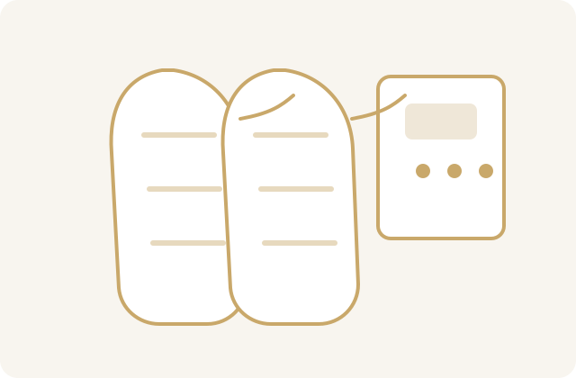
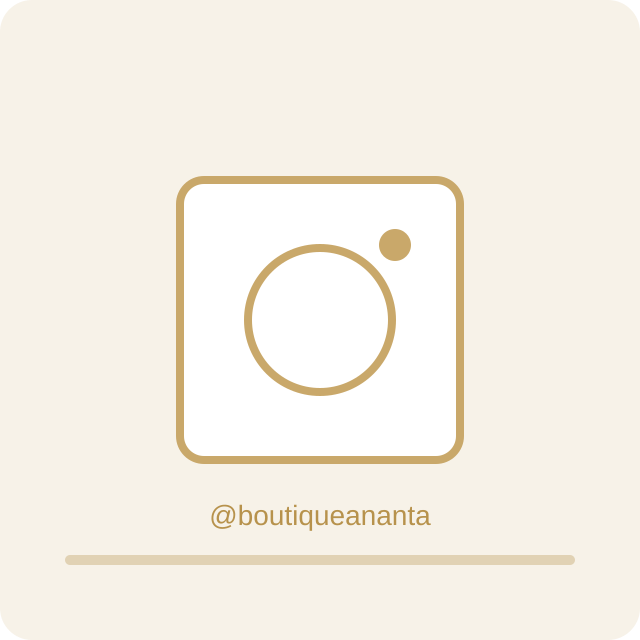

ANANTA
Massages bien-être • Pressothérapie • Soins Reiki • Boutique pierres naturelles • Encens & Déco zen à Saint-Juéry
Prestations
Bien-être
Massages à l'huile
Massage Intuisens 60min
• corps complet
• option ventre
massage intuisens : un massage à l'huile unique mêlant puissance et douceur. des gestes intuitifs et des étirements doux vous guident progressivement vers une relaxation profonde et un rééquilibrage du corps. l'option massage du ventre permet de libérer les tensions internes et d'apaiser le système digestif.
Massage haut du dos 30min
• dos
• épaules
• cou
ce massage se concentre sur les zones souvent tendues par le stress quotidien. un mélange de puissance et de douceur, avec des gestes très lents, permet de libérer les tensions accumulées et de retrouver une détente profonde.
Massage Harmonie 30min
• pieds
• jambes
• ventre
ce massage se concentre sur l'avant du corps pour un rééquilibrage total. le massage du ventre, en particulier, relâche les tensions des organes internes, améliorant la digestion et réduisant le stress. un mélange de gestes ciblés et doux, réalisés très lentement, favorise une relaxation complète.
Massage Évasion 30min
• dos
• jambes
• pieds
ce massage complet du dos, des jambes et des pieds est idéal pour se revitaliser. mêlant puissance et douceur, les gestes sont appliqués très lentement pour favoriser une relaxation musculaire optimale.
Pressothérapie
Pause légère 25min
• jambes
• circulation
une séance douce de pressothérapie idéale pour relancer la circulation et soulager les jambes lourdes. les pressions d’air successives stimulent le drainage et procurent une sensation immédiate de légèreté et de détente.
Circulation & détente 40min
• jambes
• drainage lymphatique
cette séance favorise le drainage des toxines et améliore la circulation sanguine et lymphatique. elle aide à réduire la rétention d’eau et les gonflements tout en procurant une relaxation profonde.
Relaxation intense 50min
• jambes
• bas du corps
une séance complète de pressothérapie pour une détente maximale. la pression rythmée agit en profondeur pour relancer la circulation, éliminer les toxines et procurer une sensation durable de légèreté et de bien-être.
Autre prestation
Massage Shiatsu 60min
• corps complet
• rééquilibrage énergétique
le shiatsu est une technique japonaise basée sur des pressions exercées avec les doigts le long des méridiens énergétiques du corps. ce massage favorise la circulation de l'énergie, libère les tensions et aide à retrouver un équilibre profond entre le corps et l'esprit.
Massage assis 20min
• dos
• épaules
• nuque
• bras
relâchement rapide des tensions en position assise. pressions, percussions et étirements sont appliqués sur le dos, les épaules et la nuque pour revitaliser le corps et soulager le stress en seulement quelques minutes.
Soin énergétique Reiki 90min
• harmonisation énergétique
• relaxation profonde
le reiki est une méthode énergétique japonaise réalisée par apposition des mains. ce soin favorise la détente, aide à réduire le stress et permet de rééquilibrer l'énergie du corps pour retrouver un état de calme et de bien-être intérieur.
Pressothérapie Wellbeinn
Découvrez l’univers de votre appareil de pressothérapie avec une présentation simple et pédagogique : fonctionnement, bénéfices, et conseils de séance.

Ce que vous pouvez ajouter sur votre site
- Photo réelle de votre appareil en cabine (ambiance ANANTA).
- Vidéo courte “avant séance / pendant séance / après séance”.
- Présentation des 3 formats de séance : 25, 40 et 50 minutes.
- Mini FAQ : est-ce douloureux ? à quelle fréquence ? pour qui ?
Pressothérapie en images · Instagram
Voici un espace dédié à vos photos réelles de séances et de matériel depuis @boutiqueananta.

Voir les photos sur Instagram Voir les photos sur Instagram Voir les photos sur InstagramAstuce : dès que vous me donnez 3 liens de posts Instagram (format instagram.com/p/...), je les intègre ici en embed direct.
Boutique ANANTA
Créations artisanales, objets énergétiques, accessoires bien-être.
Accéder à la boutiqueÀ propos
ANANTA est un espace de bien-être situé à Saint-Juéry, pensé comme un véritable cocon de détente où le corps et l’esprit peuvent ralentir. Chaque séance est accueillie avec écoute, douceur et présence, afin de proposer un accompagnement réellement adapté à vos besoins du moment.
Notre approche associe massages bien-être, pressothérapie et soins énergétiques Reiki pour vous aider à relâcher les tensions, retrouver de la légèreté, améliorer la récupération et rééquilibrer votre énergie. Que vous veniez pour un temps de pause, un besoin de récupération ou un mieux-être global, l’objectif reste le même : vous offrir un moment profondément ressourçant.
L’univers ANANTA se prolonge également à travers la boutique, avec une sélection d’articles autour du bien-être : pierres naturelles, encens, décorations zen et créations artisanales. Un lieu unique pour prendre soin de soi, durablement et en conscience.